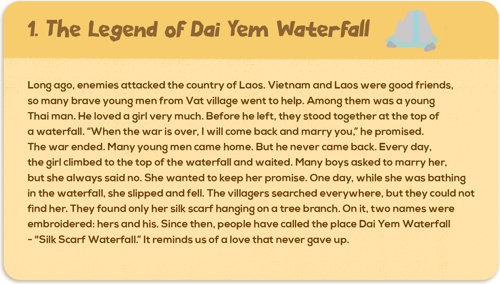

1. The Legend of Dai Yem Waterfall
Long ago, enemies attacked the country of Laos. Vietnam and Laos were good friends, so many brave young men from Vat village went to help. Among them was a young Thai man. He loved a girl very much. Before he left, they stood together at the top of a waterfall. “When the war is over, I will come back and marry you,” he promised. The war ended. Many young men came home. But he never came back. Every day, the girl climbed to the top of the waterfall and waited. Many boys asked to marry her, but she always said no. She wanted to keep her promise. One day, while she was bathing in the waterfall, she slipped and fell. The villagers searched everywhere, but they could not find her. They found only her silk scarf hanging on a tree branch. On it, two names were embroidered: hers and his. Since then, people have called the place Dai Yem Waterfall – “Silk Scarf Waterfall.” It reminds us of a love that never gave up.